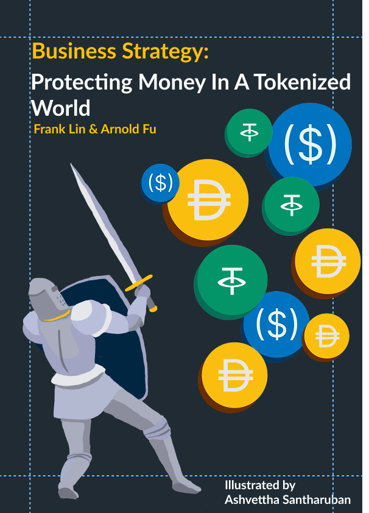
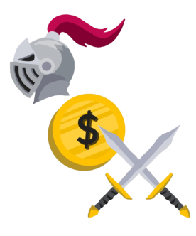

By Frank Lin & Arnold Fu | Illustrated by Ashvettha Santharuban | Spring 2026 Issue | Business Strategy

Financial innovation is often sold as progress. In recent years, stablecoins have been promoted as faster than wire transfers, more flexible than bank accounts, and better suited for a world of digital payments and tokenized finance. Supporters argue that they modernize money by allowing value to move instantly across platforms and borders. That promise has become important enough that the United States signed the GENIUS Act into law in July 2025, creating the first federal regulatory framework for payment stablecoins. Yet even under that new framework, stablecoin holders are still not treated the same as ordinary bank depositors: the FDIC’s 2025 proposed rule says reserve deposits backing payment stablecoins would not be insured to holders on a pass-through basis. That distinction matters because it reveals what stablecoins really are. They may look like dollars, act like dollars, and increasingly compete with traditional payment products, but they are still privately issued money-like claims created outside insured banking. In that sense, stablecoins resemble an older financial story: the rise of shadow banking. In the 1970s, money market mutual funds expanded by offering savers something that felt very similar to a bank deposit while operating outside the traditional banking system. Over time, that broader logic of creating “safe” and liquid instruments outside banks became a major part of shadow banking and helped amplify the panic of 2008.
Stablecoins are now following a similar path. By creating private dollar-like claims outside insured banking, depending on confidence-sensitive reserves, and showing run-prone behavior during stress, stablecoins are becoming a new form of shadow banking and could revive the same structural fragilities that helped turn a funding panic into the 2008 financial crisis.
The same logic that built shadow banking is reappearing in Digital Form
The clearest reason stablecoins resemble shadow banking is that they perform bank-like functions without fully being banks. This is almost exactly what happened in the 1970s with money market mutual funds. As interest rates rose and Regulation Q capped what banks could pay depositors, savers moved toward money market funds that offered market rates while still feeling liquid and convenient. Federal Reserve History notes that the first money market mutual fund was established in 1972 and that these funds attracted consumers by combining short-term investments with features that resembled deposits, including easy withdrawals and a fixed one-dollar share value. Stablecoins fit this same pattern, just with newer technology. They are designed to hold a stable value, usually one U.S. dollar, while also functioning as a payments instrument and store of short-term value. Treasury’s 2021 stablecoin report warned that this creates user-protection and run-risk concerns similar to other money-like instruments outside insured banking, and it recommended that legislation require stablecoin issuers to be insured depository institutions. A 2026 Federal Reserve note makes the historical comparison even clearer, arguing that stablecoins combine the regulatory-arbitrage logic of money market funds with the technological appeal of modern payment platforms. This is why stablecoins should not be treated as just another crypto product. They are not simply volatile speculative assets sitting at the edge of finance. They increasingly function like cash substitutes. That is what makes them important, but it is also what makes them dangerous. Like earlier forms of shadow banking, they offer a money-like promise without the full public guarantees that make bank deposits credible in a crisis. That gap between what users think they hold and what they are actually protected by is where financial fragility begins.
Stablecoins could recreate the same fragilities that made 2008 so severe
The second reason this comparison matters is scale. Stablecoins are no longer too small to dismiss. BIS reported in 2025 that the market had grown to around $255 billion, up sharply from less than two years earlier, and that about 90 percent of market capitalization was concentrated in just two issuers. BIS also noted that stablecoins had already become large enough to matter for Treasury markets and short-term funding conditions. In other words, this is no longer a niche crypto story. It is becoming part of the broader financial system. Once money-like products become large enough, runs become the real issue. The New York Fed’s staff report Are Stablecoins the New Money Market Funds? directly compares stablecoins with money market funds and finds that stablecoins exhibit “flight-to-safety” dynamics. The report identifies a break-the-buck threshold of $1, below which redemptions accelerate, and documents how investors move out of riskier stablecoins into safer ones during periods of stress. That is exactly the kind of confidence-sensitive behavior that makes shadow banking dangerous: the product appears stable until people rush to exit at the same time
The most obvious example came in March 2023, when Silicon Valley Bank failed and USDC temporarily lost its peg. The New York Fed report says USDC fell as low as $0.88 before recovering, and a 2025 Federal Reserve note explains why the episode was so revealing. Stablecoins, unlike bank deposits, trade continuously on secondary markets, so panic can keep spreading even if direct redemptions pause. The same Fed note also describes contagion through Dai’s Peg Stability Module, where one stablecoin’s trouble spilled into another. This is the part that should worry policymakers most: stablecoins do not just face run risk, but potentially faster and more visible run risk than traditional banking products.

That structure looks uncomfortably familiar. After the growth of shadow banking before 2008, the Federal Reserve later warned that the system had created assets that were “seemingly safe and seemingly liquid.” That illusion held until confidence broke, at which point the entire funding chain became unstable. The crisis around money market funds in 2008 showed how quickly this can happen: Federal Reserve research notes that the Reserve Primary Fund broke the buck after Lehman failed, triggering broader runs on money market funds. Stablecoins are not identical to those products, but they rely on the same basic faith that a private money-like claim will always remain redeemable at par. If that confidence disappears on a much larger scale, stablecoins could recreate the same run-prone fragilities that made the 2008 crisis so destructive.
A different perspective: why stablecoins may not become the next 2008
At the same time, there is a strong argument that the comparison goes too far. Unlike the shadow banking boom before 2008, stablecoins are being pulled into a more direct regulatory framework relatively early. The GENIUS Act requires one-to-one reserve backing with liquid assets such as U.S. dollars and short-term Treasuries, mandates monthly reserve disclosures, and prohibits misleading claims that stablecoins are federally insured. Those are real safeguards, and they make major payment stablecoins much narrower and more transparent than the highly leveraged and opaque structures that helped fuel the last crisis. There is also a practical case for why stablecoins keep growing despite these risks. The Federal Reserve has noted that payment stablecoins could reduce some frictions in cross-border payments by offering a cheaper alternative to certain traditional correspondent-banking arrangements. Supporters would argue that stablecoins are not dangerous imitations of banking so much as a more efficient update to outdated payment infrastructure. From that perspective, the real lesson is not that stablecoins are repeating history, but that regulation needs to catch up to a useful innovation before the banking system loses relevance. That counterargument has real force, but it does not fully solve the underlying problem. Regulation may reduce risk, yet it does not erase the fact that stablecoins are still built on private confidence rather than deposit insurance. And efficiency alone is not a guarantee of safety. Financial history is full of products that looked more efficient right up until they became fragile under stress. Stablecoins may improve how value moves, but if they continue growing as a major pool of private, money-like liabilities outside insured banking, then the financial system may simply be digitizing the same shadow-banking vulnerabilities instead of eliminating them.
Conclusion
Stablecoins are often framed as the future of money. But a more realistic reading is that they are the latest version of an old financial pattern: creating assets that feel like cash while sitting outside the protections and constraints of ordinary banking. That is what money market funds did in the 1970s, and it is part of what made shadow banking so dangerous before 2008. Stablecoins may use newer technology, but the structure underneath is far less original than it seems.